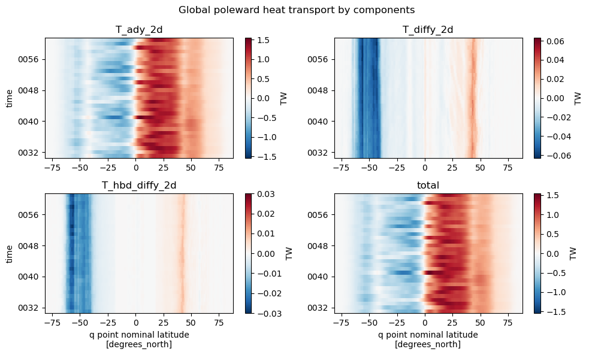
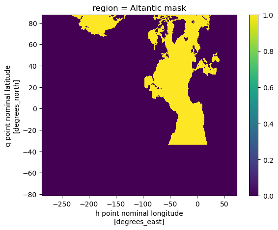
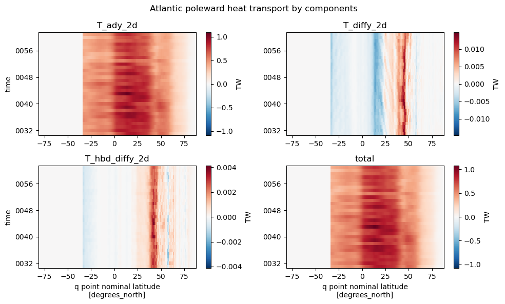

An Exception was encountered at ‘In [26]’.
Poleward Heat Transport#
mom6_tools.polar_heat_transport collection of functions for computing and plotting poleward heat transport.
The goal of this notebook is the following:
server as an example on to compute polar heat transport using CESM/MOM6 output;
evaluate model experiments by comparing transports against observed and other model estimates;
%load_ext autoreload
%autoreload 2
from mom6_tools.poleward_heat_transport import *
from mom6_tools.m6toolbox import genBasinMasks
from mom6_tools.DiagsCase import DiagsCase
import mom6_tools.m6toolbox
from ncar_jobqueue import NCARCluster
from dask.distributed import Client
from datetime import datetime, date
import yaml, os
import matplotlib.pyplot as plt
import matplotlib
import numpy as np
import xarray as xr
import warnings
warnings.filterwarnings("ignore")
Basemap module not found. Some regional plots may not function properly
# Read in the yaml file
diag_config_yml_path = "diag_config.yml"
diag_config_yml = yaml.load(open(diag_config_yml_path,'r'), Loader=yaml.Loader)
# Create the case instance
dcase = DiagsCase(diag_config_yml['Case'])
DOUT_S = dcase.get_value('DOUT_S')
if DOUT_S:
OUTDIR = dcase.get_value('DOUT_S_ROOT')+'/ocn/hist/'
else:
OUTDIR = dcase.get_value('RUNDIR')
print('Output directory is:', OUTDIR)
print('Casename is:', dcase.casename)
Output directory is: /glade/scratch/gmarques/archive/g.e23_b15.GJRAv4.TL319_t232_zstar_N65.baseline.001/ocn/hist/
Casename is: g.e23_b15.GJRAv4.TL319_t232_zstar_N65.baseline.001
# create an empty class object
class args:
pass
args.case_name = dcase.casename
# set avg dates
avg = diag_config_yml['Avg']
args.start_date = avg['start_date']
args.end_date = avg['end_date']
args.native = dcase.casename+diag_config_yml['Fnames']['native']
args.static = dcase.casename+diag_config_yml['Fnames']['static']
args.savefigs = False
args.nw = 6 # requesting 6 workers
# Parameters
sname = "placeholder-sname"
subset_kwargs = {}
product = "/glade/u/home/eromashkova/codes/mom6-tools/docs/source/examples/computed_notebooks/placeholder-sname/poleward_heat_transport.ipynb"
if not os.path.isdir('ncfiles'):
print('Creating a directory to store netcdf files (ncfiles)... \n')
os.system('mkdir ncfiles')
# read grid info
grd = MOM6grid(OUTDIR+'/'+args.static)
try:
depth = grd.depth_ocean
except:
depth = grd.deptho
MOM6 grid successfully loaded...
# basin masks - remove Nan's, otherwise genBasinMasks won't work
depth[np.isnan(depth)] = 0.0
basin_code = genBasinMasks(grd.geolon, grd.geolat, depth, verbose=False)
basin_code_xr = genBasinMasks(grd.geolon, grd.geolat, depth, verbose=False, xda=True)
cluster = NCARCluster()
cluster.scale(args.nw)
client = Client(cluster)
client
Client
Client-8c3b97cf-6d33-11ee-9a77-3cecef1b11e4
| Connection method: Cluster object | Cluster type: dask_jobqueue.PBSCluster |
| Dashboard: /proxy/34273/status |
Cluster Info
PBSCluster
32333b29
| Dashboard: /proxy/34273/status | Workers: 0 |
| Total threads: 0 | Total memory: 0 B |
Scheduler Info
Scheduler
Scheduler-cc67e060-45f8-4ca3-a2bd-37a7cab0bb98
| Comm: tcp://10.12.206.57:46473 | Workers: 0 |
| Dashboard: /proxy/34273/status | Total threads: 0 |
| Started: Just now | Total memory: 0 B |
Workers
def preprocess(ds):
''' Compute montly averages and return the dataset with variables'''
variables = ['T_ady_2d', 'T_diffy_2d', 'T_hbd_diffy_2d']
for var in variables:
print('Processing {}'.format(var))
if var not in ds.variables:
print('WARNING: ds does not have variable {}. Creating dataarray with zeros'.format(var))
jm, im = grd.geolat.shape
tm = len(ds.time)
da = xr.DataArray(np.zeros((tm, jm, im)), dims=['time', 'yq','xh'], \
coords={'yq' : grd.yq, 'xh' : grd.xh, 'time' : ds.time}).rename(var)
ds = xr.merge([ds, da])
return ds[variables]
print('\n Reading monthly native history files...')
# load data
%time
ds = xr.open_mfdataset(OUTDIR+'/'+args.native, \
parallel=True, data_vars='minimal', chunks={'time': 12},\
coords='minimal', compat='override', preprocess=preprocess)
Reading monthly native history files...
CPU times: user 3 µs, sys: 0 ns, total: 3 µs
Wall time: 5.96 µs
print('\n Selecting data between {} and {}...'.format(args.start_date, args.end_date))
%time
ds_sel = ds.sel(time=slice(args.start_date, args.end_date)).load()
Selecting data between 0031-01-01 and 0062-01-01...
CPU times: user 2 µs, sys: 1 µs, total: 3 µs
Wall time: 6.2 µs
attrs = {
'description': 'Annual mean of poleward heat transport by components ',
'start_date': args.start_date,
'end_date': args.end_date,
'reduction_method': 'annual mean weighted by days in each month',
'casename': dcase.casename
}
ds_ann = m6toolbox.weighted_temporal_mean_vars(ds_sel,attrs=attrs)
varName = 'T_ady_2d'
print('Saving netCDF files...')
if not os.path.isdir('ncfiles'):
os.system('mkdir -p ncfiles')
ds_mean = ds_ann.mean('time').load()
attrs = {'description': 'Time-mean poleward heat transport by components ', 'units': ds[varName].units,
'start_date': args.start_date, 'end_date': args.end_date, 'casename': dcase.casename}
m6toolbox.add_global_attrs(ds_mean,attrs)
ds_mean.to_netcdf('ncfiles/'+dcase.casename+'_heat_transport.nc')
Saving netCDF files...
# fix coords
basin_code_xr['xh'] = ds_sel.xh
basin_code_xr = basin_code_xr.rename({'yh':'yq'})
basin_code_xr['yq'] = ds_sel.yq
basin_code_xr.to_netcdf('ncfiles/'+dcase.casename+'_region_masks.nc')
Hovmoller plots#
Global#
%matplotlib inline
f, ((ax1, ax2), (ax3, ax4)) = plt.subplots(2, 2, figsize=(10, 6))
plt.suptitle('Global poleward heat transport by components')
#T_ady_2d
(ds_ann.T_ady_2d*1.0e-15).sum(dim='xh').plot(ax=ax1,cbar_kwargs={"label": "TW"});
ax1.set_title("T_ady_2d")
ax1.set_xlabel("")
# T_diffy_2d
(ds_ann.T_diffy_2d*1.0e-15).sum(dim='xh').plot(ax=ax2,cbar_kwargs={"label": "TW"});
ax2.set_title("T_diffy_2d")
ax2.set_xlabel("")
ax2.set_ylabel("")
# T_hbd_diffy_2d
(ds_ann.T_hbd_diffy_2d*1.0e-15).sum(dim='xh').plot(ax=ax3,cbar_kwargs={"label": "TW"});
ax3.set_title("T_hbd_diffy_2d")
# T_hbd_diffy_2d
total = (ds_ann.T_hbd_diffy_2d + ds_ann.T_diffy_2d + ds_ann.T_ady_2d).rename('total')
(total*1.0e-15).sum(dim='xh').plot(ax=ax4,cbar_kwargs={"label": "TW"});
ax4.set_title("total")
ax4.set_ylabel("")
# Make it nice
plt.tight_layout()

Atlantic#
atl = (basin_code_xr.sel(region='MedSea') + basin_code_xr.sel(region='HudsonBay') + \
basin_code_xr.sel(region='Arctic') + basin_code_xr.sel(region='AtlanticOcean') + \
basin_code_xr.sel(region='BlackSea'))
atl['region'] = 'Altantic mask'
atl.plot();

%matplotlib inline
f, ((ax1, ax2), (ax3, ax4)) = plt.subplots(2, 2, figsize=(10, 6))
plt.suptitle('Atlantic poleward heat transport by components')
#T_ady_2d
(ds_ann.T_ady_2d*1.0e-15*atl).sum(dim='xh').plot(ax=ax1,cbar_kwargs={"label": "TW"});
ax1.set_title("T_ady_2d")
ax1.set_xlabel("")
# T_diffy_2d
(ds_ann.T_diffy_2d*1.0e-15*atl).sum(dim='xh').plot(ax=ax2,cbar_kwargs={"label": "TW"});
ax2.set_title("T_diffy_2d")
ax2.set_xlabel("")
ax2.set_ylabel("")
# T_hbd_diffy_2d
(ds_ann.T_hbd_diffy_2d*1.0e-15*atl).sum(dim='xh').plot(ax=ax3,cbar_kwargs={"label": "TW"});
ax3.set_title("T_hbd_diffy_2d")
# T_hbd_diffy_2d
total = (ds_ann.T_hbd_diffy_2d + ds_ann.T_diffy_2d + ds_ann.T_ady_2d).rename('total')
(total*1.0e-15*atl).sum(dim='xh').plot(ax=ax4,cbar_kwargs={"label": "TW"});
ax4.set_title("total")
ax4.set_ylabel("")
# Make it nice
plt.tight_layout()

Compute temporal mean for each term#
stream = True
# create a ndarray subclass
class C(np.ndarray): pass
# advection
varName = 'T_ady_2d'
if varName in ds_sel.variables:
tmp = np.ma.masked_invalid(ds_ann[varName].mean('time').values)
tmp = tmp[:].filled(0.)
advective = tmp.view(C)
advective.units = ds_ann[varName].units
else:
raise Exception('Could not find "T_ady_2d" in ds')
# neutral diffusion
varName = 'T_diffy_2d'
if varName in ds.variables:
tmp = np.ma.masked_invalid(ds_ann[varName].mean('time').values)
tmp = tmp[:].filled(0.)
diffusive = tmp.view(C)
diffusive.units = ds_ann[varName].units
else:
diffusive = None
warnings.warn('Neutrally-diffusive temperature term not found. This will result in an underestimation of the heat transport.')
# horizontal diffusion
varName = 'T_hbd_diffy_2d'
if varName in ds.variables:
tmp = np.ma.masked_invalid(ds_ann[varName].mean('time').values)
tmp = tmp[:].filled(0.)
hbd = tmp.view(C)
hbd.units = ds_ann[varName].units
else:
hbd = None
warnings.warn('Horizontal diffusion term not found. This will result in an underestimation of the heat transport.')
# release workers
client.close(); cluster.close()
Plotting#
Execution using papermill encountered an exception here and stopped:
%matplotlib inline
# plot model vs obs
plt_heat_transport_model_vs_obs(advective, diffusive, hbd, basin_code, grd, args)
---------------------------------------------------------------------------
TypeError Traceback (most recent call last)
File /glade/work/eromashkova/miniconda3/envs/mom6-diagnostics/lib/python3.11/site-packages/netCDF4/utils.py:287, in _StartCountStride(elem, shape, dimensions, grp, datashape, put, use_get_vars)
286 try:
--> 287 e = int(e)
288 newElem.append(e)
TypeError: int() argument must be a string, a bytes-like object or a real number, not 'NoneType'
During handling of the above exception, another exception occurred:
IndexError Traceback (most recent call last)
Cell In[26], line 3
1 get_ipython().run_line_magic('matplotlib', 'inline')
2 # plot model vs obs
----> 3 plt_heat_transport_model_vs_obs(advective, diffusive, hbd, basin_code, grd, args)
File /glade/work/eromashkova/miniconda3/envs/mom6-diagnostics/lib/python3.11/site-packages/mom6_tools/poleward_heat_transport.py:241, in plt_heat_transport_model_vs_obs(advective, diffusive, hbd, basin_code, grd, args)
238 plt.plot(jra.lat, jra_mean_global,'k', label='JRA-55 v1.3', color='#1B2ACC', lw=1)
239 plt.fill_between(jra.lat, jra_mean_global-jra_std_global, jra_mean_global+jra_std_global,
240 alpha=0.25, edgecolor='#1B2ACC', facecolor='#089FFF')
--> 241 plt.plot(yobs,NCEP['Global'],'k--',linewidth=0.5,label='NCEP')
242 plt.plot(yobs,ECMWF['Global'],'k.',linewidth=0.5,label='ECMWF')
243 plotGandW(GandW['Global']['lat'],GandW['Global']['trans'],GandW['Global']['err'])
File /glade/work/eromashkova/miniconda3/envs/mom6-diagnostics/lib/python3.11/site-packages/matplotlib/pyplot.py:2812, in plot(scalex, scaley, data, *args, **kwargs)
2810 @_copy_docstring_and_deprecators(Axes.plot)
2811 def plot(*args, scalex=True, scaley=True, data=None, **kwargs):
-> 2812 return gca().plot(
2813 *args, scalex=scalex, scaley=scaley,
2814 **({"data": data} if data is not None else {}), **kwargs)
File /glade/work/eromashkova/miniconda3/envs/mom6-diagnostics/lib/python3.11/site-packages/matplotlib/axes/_axes.py:1688, in Axes.plot(self, scalex, scaley, data, *args, **kwargs)
1445 """
1446 Plot y versus x as lines and/or markers.
1447
(...)
1685 (``'green'``) or hex strings (``'#008000'``).
1686 """
1687 kwargs = cbook.normalize_kwargs(kwargs, mlines.Line2D)
-> 1688 lines = [*self._get_lines(*args, data=data, **kwargs)]
1689 for line in lines:
1690 self.add_line(line)
File /glade/work/eromashkova/miniconda3/envs/mom6-diagnostics/lib/python3.11/site-packages/matplotlib/axes/_base.py:311, in _process_plot_var_args.__call__(self, data, *args, **kwargs)
309 this += args[0],
310 args = args[1:]
--> 311 yield from self._plot_args(
312 this, kwargs, ambiguous_fmt_datakey=ambiguous_fmt_datakey)
File /glade/work/eromashkova/miniconda3/envs/mom6-diagnostics/lib/python3.11/site-packages/matplotlib/axes/_base.py:512, in _process_plot_var_args._plot_args(self, tup, kwargs, return_kwargs, ambiguous_fmt_datakey)
510 x = x[:, np.newaxis]
511 if y.ndim == 1:
--> 512 y = y[:, np.newaxis]
514 if self.command == 'plot':
515 make_artist = self._makeline
File src/netCDF4/_netCDF4.pyx:4934, in netCDF4._netCDF4.Variable.__getitem__()
File /glade/work/eromashkova/miniconda3/envs/mom6-diagnostics/lib/python3.11/site-packages/netCDF4/utils.py:290, in _StartCountStride(elem, shape, dimensions, grp, datashape, put, use_get_vars)
288 newElem.append(e)
289 except:
--> 290 raise IndexError(IndexErrorMsg)
291 if type(e)==type(Ellipsis):
292 i+=1+nDims-len(elem)
IndexError: only integers, slices (`:`), ellipsis (`...`), and 1-d integer or boolean arrays are valid indices